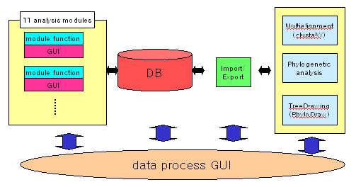

|
Hyeweon Nam[1], Daesang Lee1,[2], Hongseok Tae1, Kiejung Park1
Keywords: workbench, sequence analysis, multialignment, phylogeny, database
1 Introduction
As tremendous progress has been achieved in recent genomics and proteomics projects, a lot of bioinformatics tools have been developed to treat a vast amount of sequence data and information especially for sequence analysis. While a lot of commercial packages have been produced on various execution platforms, module tools should be still re-implemented without utilizing already developed versions, which results in duplication of time and efforts. A few approaches for standardization of sequence analysis modules have been done, including the very ambitious projects of NCBI’s Toolkit development, BioPerl libraries, and XML based works.
We have developed a few module tools suggested by a Korean MOST project while each module is composed of a few objects, for reusability. For developing a practical and useful program, database features are added to manage sequence and annotation data and information created both from input and from analysis modules. The program (ISAWB:Integrated Sequence Analysis WorkBench) is a small workbench on Windows system for managing sequence data and analyzing them to get processed information with Windows GUI.
2 Methods and System Structure
Eleven features (Table 1) were suggested from the MOST project and currently 6 features are implemented in the program. Each module has an independent function while a few modules are related with each other in usage. Firstly, the modules were implemented to a C++ classes with standard C++ codes with VisualC++ 6.0 and archived into DLL files. As the function of each module (Table 1) needs user interface, each GUI was also implemented with VisualC++ 6.0 specific features, which are not sharable in other programs utilizing the module classes.
Database schema contains tables not only for input sequence and related annotation data but also for analysis results generated from the analysis modules. AccessDB was used as a DB engine and database management was implemented with VisualC++ functions. Among the implemented features, BLAST[1] is called externally instead of integrating BLAST codes into ISAWB for flexibility and implementation efficiency because BLAST is a well-known program and its interface is also known very well. Other module functions were implemented without utilizing any other source codes.
ISAWB has more analysis features which will be added from another project, where multialignment and phylogenetic analysis[2] features are to be implemented (Fig. 1). For integration of the additional features, ISAWB has additional tables and attributes in its database and data exchange functions. Data import/export from/to the additional features will be done XML for flexibility between two independent projects.
|
module name |
function |
implemented |
|
resitemap |
Search restriction enzyme recognition sites and display the statistics with a simple map |
yes |
|
vecscreen |
Search for vector sequences and generate a masked sequence |
yes |
|
transseq |
Translate a DNA sequence for 6 frames with translation options |
yes |
|
dotplot |
Display pairwise sequence comparison with dot plot to show homology relation |
yes |
|
compseq |
Convert a sequence to generate a reverse complementary sequence |
yes |
|
BLAST |
Call BLAST and format result for homology search |
yes |
|
gcanal |
Calculate GC content and predict CpG islands |
no |
|
codusage |
Calculate/predict codon usage |
no |
|
primer |
Design and generate primer(s) with DNA sequence(s) and conditions |
no |
|
hydropho |
Calculate hydrophobicity of a protein with statistical parameters |
no |
|
proteolsite |
Calculate/search proteolytic enzyme cutting sites |
no |
Table 1: Analysis modules of the integrated system ISAWB.
Currently, six analysis modules are implemented whose requirements are taken from the suggestion of the MOST project. Five more analysis modules will be implemented and added to the integrated program. All modules will be modularized as a VisualC++ class library and be available to developers as DLL files

Figure 1: System structure of ISAWB including multialignment/phylogeneny features
3 References
[1] Altschul, S.F., Madden, T.L., Schaffer, A.A., Zhang, J., Zhang, Z., Miller, W. and Lipman, D.J. 1997. Gapped BLAST and PSI-BLAST: a new generation of protein database search programs genome evolution. Nucleic Acids Research 25:3389-3402.
[2] Choi, J.-H., Jung, H.-Y., Kim, H.-S. and Cho, H.-G. 2000. PhyloDraw: a phylogenetic tree drawing system. Bioinformatics 16:1056-1058.